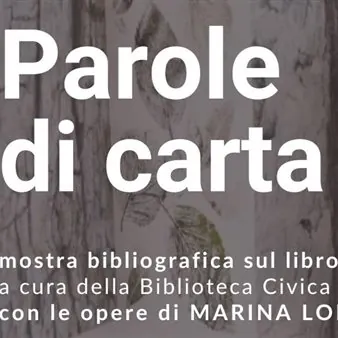

da mar 3 nov a sab 21 nov
Parole di carta
dal 3 al 21 novembre 2026 presso l'Atrio di Palazzo Bartolini, sede storica della Biblioteca Civica "V. Joppi" di Udine in piazza Marconi 8 Mostra bibliografica sul libro d'artista, con opere di Marina Lombardi L'esposizione offre un percorso critico e documentario sul fascino…
 Indicazioni
Indicazioni
- Costi e prenotazioni
- Costo non indicato · Prenotazione non indicata
- Programma
- Programma da verificare. Apri la fonte ufficiale per orari e possibili aggiornamenti.
- In caso di maltempo
- Nessuna indicazione specifica pubblicata.
- Note
- Acquisito automaticamente dalla fonte.
L’EVENTO
Descrizione completa
Mostra bibliografica sul libro d'artista, con opere di Marina Lombardi
L'esposizione offre un percorso critico e documentario sul fascino della materia libraria, all'interno del quale vengono ospitate e valorizzate circa quindici opere uniche dell'artista udinese Marina Lombardi, manufatti interamente realizzati, dipinti e rilegati a mano. Il percorso della biblioteca si articola in tre sezioni tematiche nelle quali i volumi delle collezioni fanno da cornice e guida alle opere presenti. La prima sezione esplora la saggistica, la sperimentazione della carta e la forma-libro, dai testi teorici alle lezioni del Metodo Munari e dei grandi maestri del Novecento. La seconda area è incentrata sul legame tra parola e segno grafico, attraverso i preziosi cataloghi della poesia visiva e delle avanguardie editoriali conservati dall'Istituto. La terza sezione documenta la ricca memoria del territorio, esponendo le storiche pubblicazioni delle rassegne del DARS e delle stamperie d'arte locali. Una mostra con cui la Biblioteca Joppi invita a riscoprire la poesia della carta, mettendo in dialogo la memoria presente nelle proprie collezioni librarie con la sensibilità dell'arte contemporanea.
Orario di visita:
lunedì - venerdì: 9.00 - 19.00
sabato: 10.00 - 13.00 Inagurazione martedì 3 novembre ore 18:00
IL PROGRAMMA
Programma e orari
Appuntamenti raccolti dalle fonti elencate. Dove manca un orario, non è ancora disponibile in questa scheda.
Programma pubblicato
- Dal 2026-11-03 al 2026-11-21
INFORMAZIONI UTILI
Prima di partire
- Controllare la fonte prima di partire.
ORGANIZZAZIONE